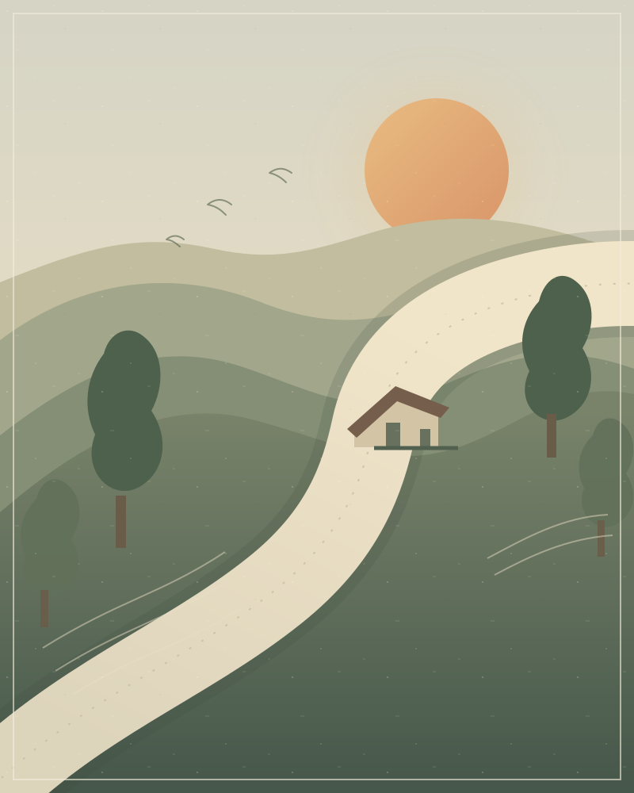

АУДИОИСТОРИЯ · 12 ГЛАВ
Лори ЛиДорога домой
История писателя, который однажды ушёл из дома пешком — и всю жизнь возвращался к тому, что оставил позади.
47:48длительность
12глав
Русскийязык выпуска

СЛЭД · ГЛОСТЕРШИР51°44′ N 2°12′ W
01 / СЛУШАТЬ
Устройтесь поудобнее
Весь выпуск — целиком, или с любой главы.
Дорога домойПолный выпуск · 2026
МОНО · 24 КГЦ
00:00−47:48
Готов к прослушиванию
02 / ОГЛАВЛЕНИЕ
История в двенадцати главах
Нажмите на главу, чтобы перейти к ней.
Загружаем оглавление…
03 / О ВЫПУСКЕ
Не биография на бегу,
а дорога с остановками.
Спокойный разговор о жизни Лори Ли по книге Валери Гроув The Life and Loves of Laurie Lee. О доме в долине, дороге в Испанию, людях рядом и памяти, которая иногда хранит не всё одинаково точно.
Авторский пересказ — не полный перевод книги. Музыка и чужие аудиозаписи не используются.